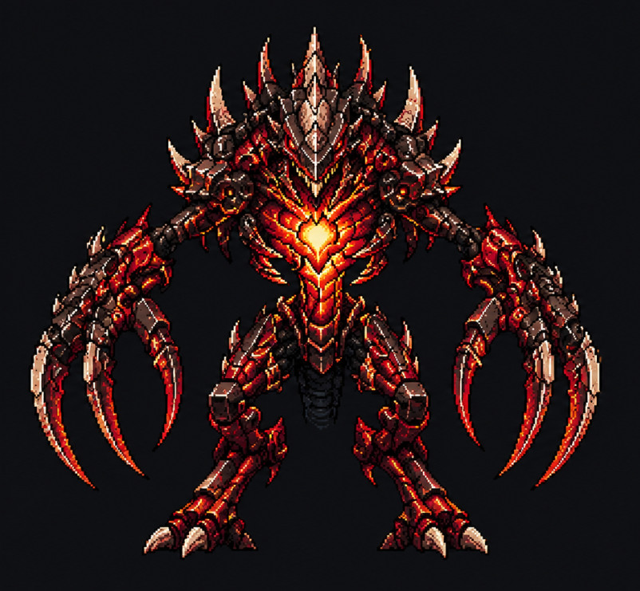
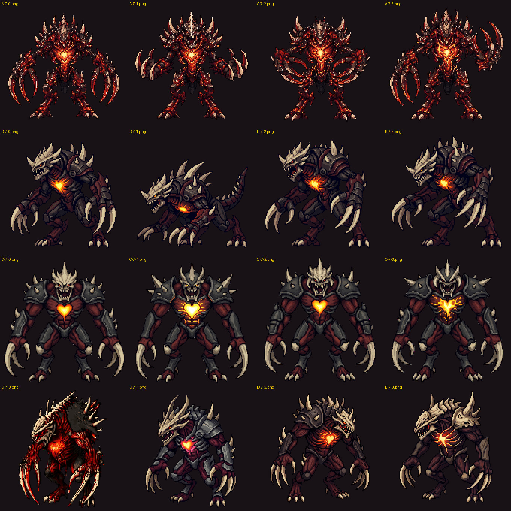
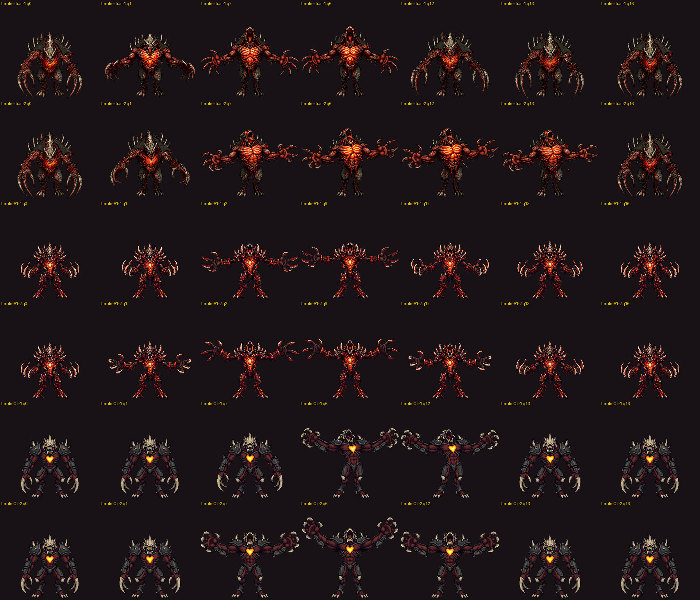
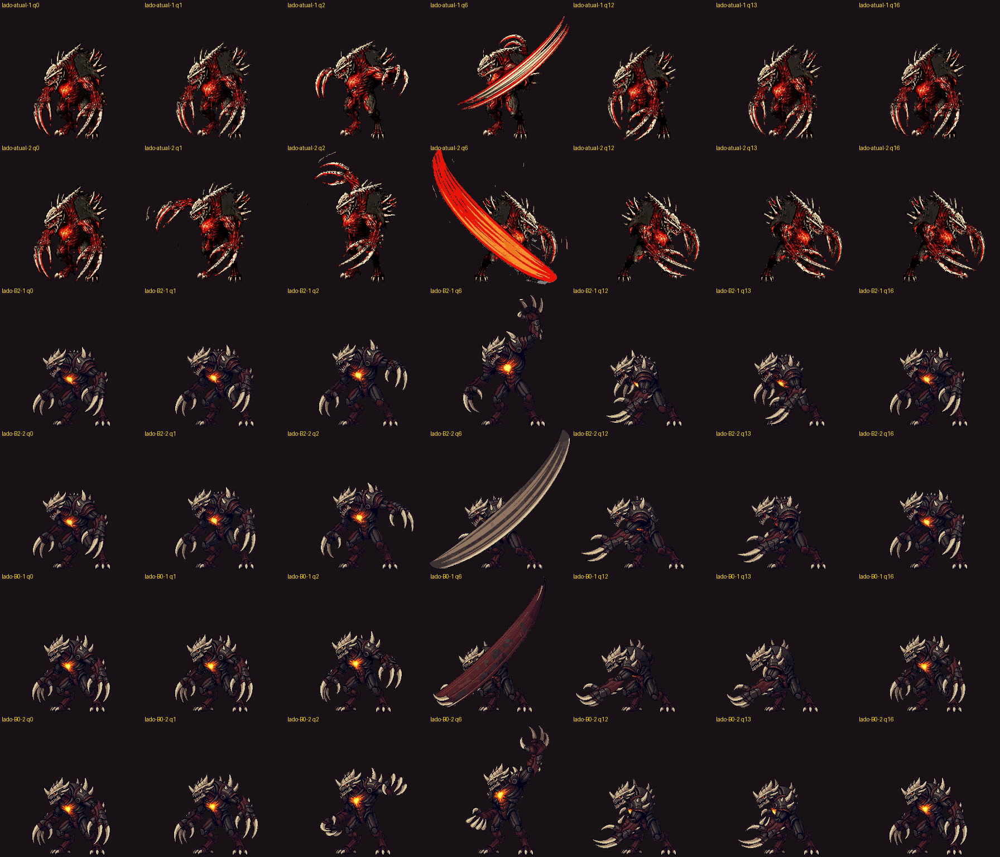
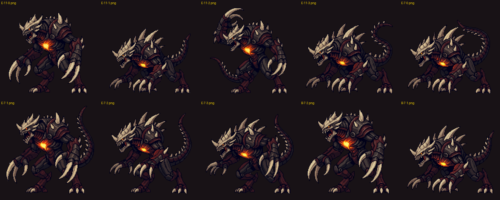
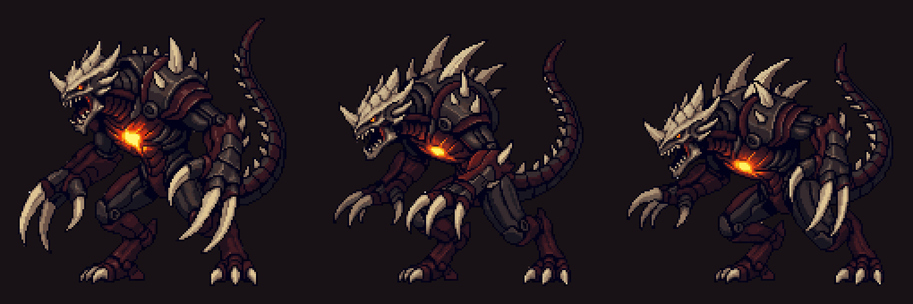
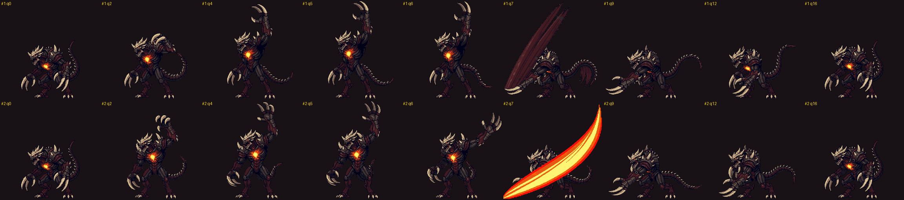

24/11. Você perguntou se é o desenho de hoje que é difícil de animar. Para responder, fiz variações a partir do seu conceito biomecânico, cada uma atacando um ponto fraco do desenho atual. Depois animei as melhores e a Besta atual com o mesmo gesto, o mesmo pedido, a mesma ferramenta (PixMiniMax, a de setembro) e duas tentativas cada. Assim o único fator que muda é o desenho. São candidatas: nada entrou no jogo e a decisão do tipo do bicho continua sua.

Quatro pedidos, com quatro candidatas cada, todas em 170² (o tamanho dela na luta é ~120 px). Todos os pedidos dizem o mesmo sobre o corpo: membros em segmentos rígidos, juntas escuras desenhadas, braços num tom diferente do tronco, formas grandes sem ruído miúdo, proporções compactas e luz só no core.
| Linha | O que pedi | O que saiu |
|---|---|---|
| A | O seu conceito de frente, escurecido. | Fiel ao conceito, mas o gerador não escureceu: o corpo inteiro continua aceso e a superfície é muito picada. |
| B | O seu conceito de lado, em três quartos virado à esquerda, na pose de bote. | Os quatro saíram escuros, de lado e virados para o lado certo, com juntas e placas que se leem. O B1 saiu de quatro, com rabo. Ficou mais "armadura" que o seu conceito. |
| C | A carne e osso de hoje com a construção de membros do conceito (sem metal), de frente. | Limpo e legível, mas o core virou um coração de desenho (♥) e o conjunto ficou genérico, mais "demônio de RPG" que horrendo. |
| D | A mesma carne com juntas, de lado. | Falhou: o D0 é a Besta atual copiada, e o D2 e o D3 saíram com duas cabeças. |

Em cada painel estão as duas tentativas de cada desenho, uma por linha. A Besta atual entra reduzida para caber no quadro com folga (a mesma base de 0,70 de hoje à tarde), e as variações ficam do mesmo tamanho dentro dele.

| Desenho | O que acontece |
|---|---|
| Atual | Vira outro bicho nas duas tentativas. Com os braços abertos, a placa dos ombros some, a cabeça vira uma cabeça humanoide de boca aberta, o peito vira abdômen musculoso aceso e as garras longas viram mãos pequenas. Ela só volta a ser ela no quadro 13. |
| A1 (o conceito) | O corpo segura: as placas, o capacete e as pernas continuam os mesmos. As garras se enrolam em argolas com os braços abertos. |
| C2 (carne com juntas) | O corpo segura quase todo, com o coração e os segmentos no lugar. Na tentativa #1 as ombreiras somem no meio, e as garras viram punhos redondos. |

| Desenho | O que acontece |
|---|---|
| Atual | Na #1 o corpo acende e perde a placa no quadro 2, e um arco branco é pintado no 6. Na #2 o arco é vermelho, e no fim ela se vira para a direita e acaba virada para o lado errado. |
| B2 | O braço sobe inteiro, com os segmentos e a mão de garras no lugar (quadros 5–6), corta e volta. O bicho é o mesmo do começo ao fim. Mesmo pedindo que não, as duas tentativas pintam um arco num quadro só (vermelho na #1, osso na #2). |
| B0 | O mesmo: na #2 o braço sobe limpo e sem arco nenhum, e na #1 há um arco num quadro. O corpo segura nas duas. |


Você gostou da criatura da linha B e do rabo que só a B1 teve. Pedi a B2 (a do teste) como assunto e a B1 só pelo rabo, em duas chamadas: 8 candidatas e 30 gerações. A grade mostra as 8, com a B2 e a B1 no fim para comparar.


Mesmo pedido do golpe de lado, com uma frase a mais: o rabo chicoteia junto e fica atrás das pernas. À esquerda, para comparar, está a Besta atual no mesmo pedido.


Custo: 60 gerações nas variações e 24 no teste. Ferramentas em ferramentas/variar.mjs (as variações, REST /generate-image-v2) e scripts/_f4/_pl.mjs mini (o teste). As bases do teste estão em cru/bases/, e os quadros em cru/anim/.